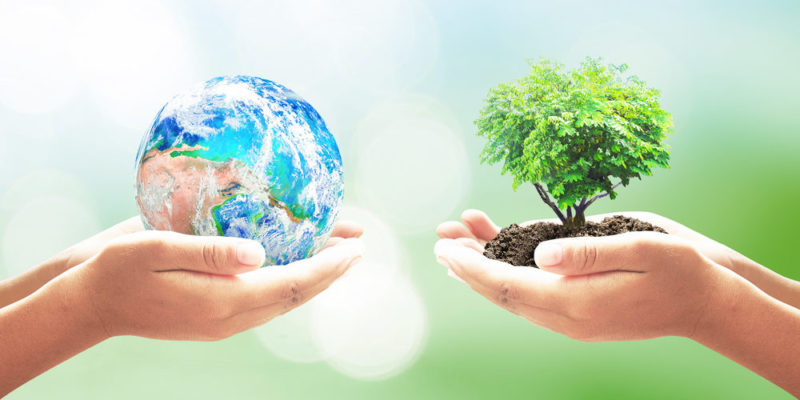
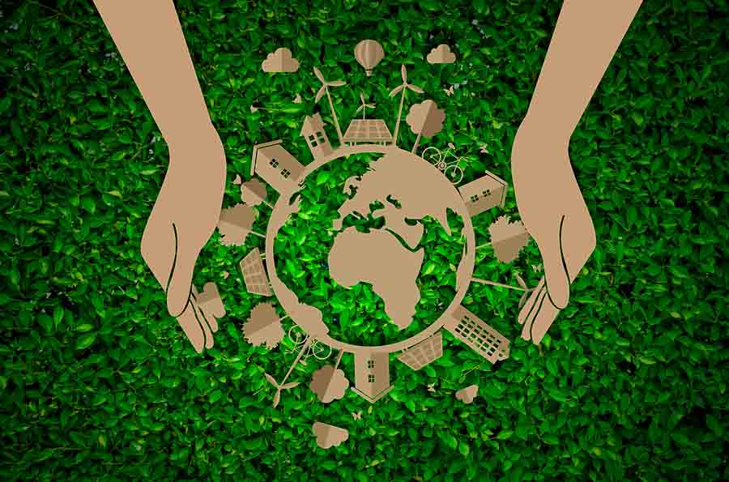

Tema 3 "Ecologia"
Que es la Ecologia
La ecología es una rama de la biología en
la que se estudian y analizan las
interacciones entre los seres vivos con el
hábitat donde se encuentran, es decir, las
relaciones que existen entre los factores
bióticos (relaciones entre seres vivos) y los
factores abióticos (condiciones
ambientales).Etimológicamente, la palabra ecología deriva del griego ökologie
compuesta de la unión de los vocablos griegos oikos, que significa ‘casa’, ‘hogar’ o
‘vivienda’, y logos, que significa ‘estudio’ o ‘tratado’. En este sentido, ecología significa
‘el estudio del hogar’.Fue Ernst Haeckel, científico alemán, quien creó el término
ecología en el año 1869 con el fin de designar un nombre a la ciencia que estudia las
relaciones entre los seres vivos y el medio ambiente.Por tanto, el objeto de estudio de la
ecología está en determinar cómo los factores abióticos (humedad, temperatura, entre
otros) interactúan con los factores bióticos (relación entre la gran diversidad de seres
vivos que se encuentran en un mismo hábitat).De allí que la ecología haga caso
particular a cómo las características particulares de un hábitat influyen en el desarrollo,
modificación y comportamiento de las diferentes especies.En este sentido, el concepto
de ecología humana se refiere al estudio científico de las relaciones entre los seres
humanos y el medio ambiente, incluyendo las condiciones naturales, las interacciones y
los aspectos económicos, psicológicos, sociales y culturales. Por tanto, la ecología se
enfoca en estudiar los ecosistemas o
poblaciones en general.Asimismo, la
ecología es una ciencia en la que se
desarrollan estudios sobre cuáles pueden
ser los cambios que pueden sufrir los
ecosistemas a partir de las actividades de
los seres humanos.Es importante destacar
la importancia de los estudios ecológicos,
que son multidisciplinarios, por lo que
posibilitan ampliar los conocimientos en esta área de las ciencias, así como, diseñar
estrategias y mecanismo enfocados en la preservación y conservación del medio
ambiente.Por otra parte, en la actualidad el término ecológico va más allá de las
investigaciones científicas, ahora forma parte de campañas políticas y movimientos
sociales que buscan la protección e interacción consciente del ser humano con el medio
ambiente.Por tanto, la ecología ha adoptado un carácter ambientalista y su objetivo es
cuidar y mantener el equilibrio de las actividades humanas con las de nuestro hábitat.
Principales ramas de la ecología
.jpg)
La verdad es que existen muchisimas ramas de ecologia
Le mostraremos las más importantes
ecologia micobiana, ecologia del paisaje, ecologia de la recreacion
ecologia de las poblaciones, ecologia evolutiva, ecologia social
ecologia humana, ecologia cultural
zoologia y botanica